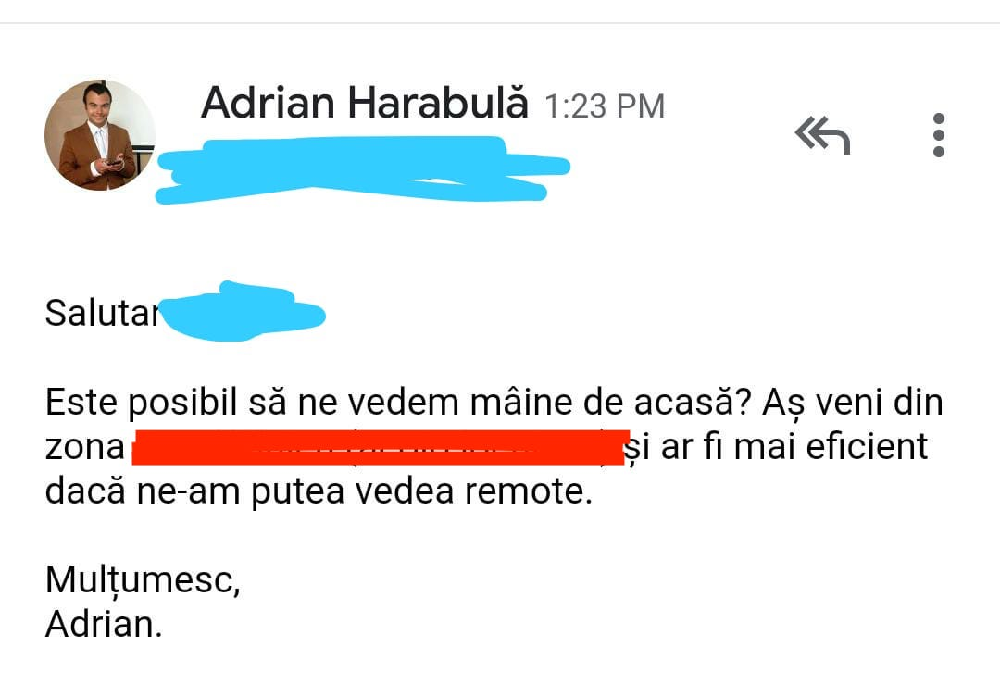
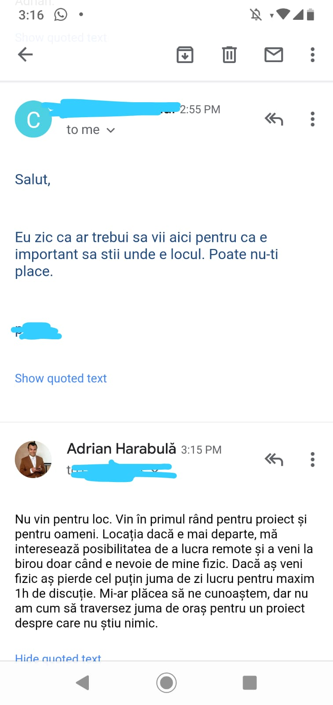

E prea mult dacă ceri interviul de acasă?
by Adrian Harabulă on 20 January, 2020
Ai șansa vieții tale... primești răspuns înapoi, după o lună, pe bune, chiar sunt firme care răspund după o lună după ce aplici? După o lună probabil ești deja mort de foame. Hai trecem peste, în fine, ești invitat la interviu, zi Doamne mulțumesc! Ce să vrei mai mult de atât! Stabilești întâlnirea. Marchezi în calendar, totul perfect, o să mergi la interviu. Ura!!!
Interviul e săptămâna viitoare. Trece o zi, și parcă se duce un pic entuziasmul, îți dai seama că mai ai de mers și la dentist. Vine și noua săptămână, boom ești super productiv la treaba pe care o faci deja, și parcă noul interviu nu mai e așa entuziasmant. Defapt îți dai seama că nici măcar nu știi despre ce ofertă e vorba și ai pierde cam juma de zi dacă te duci să te prezinți fizic, tocmai în celălalt capăt al orașului pentru o cafea, sau pentru ceva ce nu ți-a fost specificat clar de la început. Începe să fie din ce în ce mai grea decizia.
Să mai mergi oare?
Hmm... oare se poate și de acasă? Aș putea să îmi etalez talentul și de acasă, am internet, am cameră web (nu știu la ce vă gândiți, dar nu, nu e vorba de videochat!), chiar trebuie să fiu la interviu? În sfârșit am găsit o soluție bună și pentru mine și pentru intervievator. Hai să o propunem. 
Degetele încleștate, am propus ceva revoluționar. Fac totul din confortul propriei case și fără să mă deranjez prea mult de la ce făceam deja până atunci. Wow super.
Să vedem ce urmează: 
Oh nu, tot planul ne-a fost dat peste cap. Se pare că nu putem presta și de acasă. Va trebui să ne conformăm? Nu știu cum sunt alții dar eu sunt bine așa cum sunt, așa că am răspuns, că insist să ținem de acasă interviul, pentru că nu are rost să traversez tot orașul pentru un interviu la care ne-am putea vedea doar remote, cu aceleași beneficii.
Degetele încleștate iar, am zis-o și pe asta, hai să vedem ce urmează:

La naiba! Se pare că până aici ne-a fost 😥
Chiar nu înțeleg... Firma respectivă avea sediul, efectiv în afara orașului. După ce le-am zis că nu am motiv să merg până acolo și că aș mai avea și alte lucruri de făcut în viața personală dar aș putea participa 100% remote, răspunsul a fost că nu se poate. Și atât, fără niciun argument. Mi se pare revoltător că se întâmplă asta în 2020!